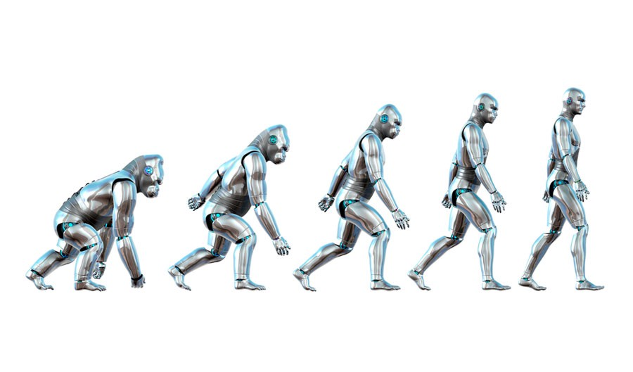

Robótica
postado em 28 de junho de 2022 O conceito sobre robótica surgiu no início do século XX, na obra “O Mentiroso” do autor de ficção cientifica Isaac Asimov, Foi o autor quem criou a palavra 'robótica' e foi também ele quem apresentou, no campo da ficção-científica, as Leis da Robótica.
RobóticaMecatrônica
postado em 29 de junho de 2022
Mecatrônica é um ramo multidisciplinar da engenharia voltado ao projeto de sistemas eletromecânicos automatizados, controlados por computador. É uma espécie de "futuro das engenharias". Inicialmente, o curso tem disciplinas como: Cálculo, Física, Mecânica e Elétrica básica.
Mecatrônica